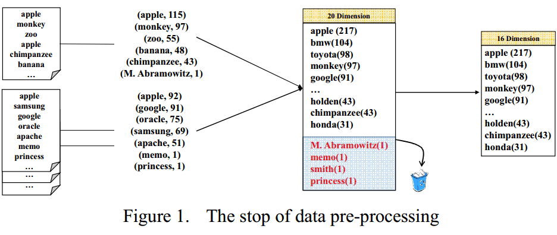
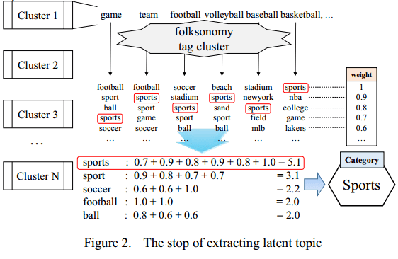
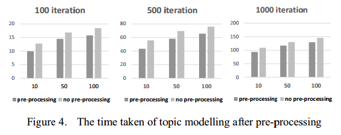
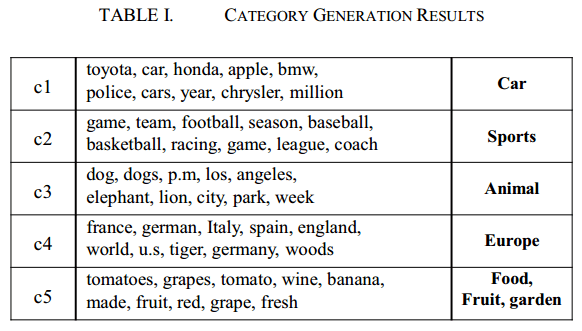
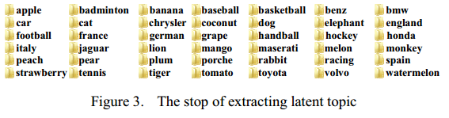

0. 概要
1) 大多数网站不提供网站分类服务，小部分提供分类服务的网站也没有用到用户导向的自动分类器。
2) 分析大量数据存在一些限制，就是在收集数据的时候需要处理高维向量。
3) 这篇论文的贡献：
a. 利用social folksonomy来收集（clustering）数据。
b. 提出一个通过去除无意义关键字来降低向量维度的方法。
1. 介绍
1) Clustering（聚类）定义：给一系列的物品分组，并且找出物品间的关系。
2) 目前clustering算法的一些缺点：高维向量会导致算法在操作上变得很复杂；还是很难根据一个聚类的几个关键字就总结出这个聚类的topic（话题）。
3) 参考文献[1]中提出了：
a. 通过自组织World Cluster Map和Document Cluster Map来生成一个分类树的结构。
b. 使用SVM对每个聚类的关键字进行topN的排序，进而选出其topic。
4) 本论文提出的两个做法：
a. 通过去除文本中没意义的词组来降低向量维度，进而降低复杂度。这个过程发生在聚类预处理阶段——生成关键字表。
b. 提出一个系统，这个系统利用tag cluster（标签聚类）来寻找每个聚类的topic，而且这个系统还能为用户推荐topic。
2. 本论文提出的方法
1) 数据预处理
a. 文档向量化：把文档分成一个个的词，提取所有文档中的词组成关键字字典（字典里的关键字不能重复）。多少个关键字就是多少维向量。

b. 去除stop words策略：只存在于一篇文档里且占比（出现次数）很小的关键字可以剔除，这种策略的处理效果在大数据的情况下尤为好。
据统计，一个文档里只出现一次的那种词平均占了字典的20%。如果能去除那些出现次数少于5次的词，那维度会降低一半。
2) 提取潜在的topic
K-Means和Latent Dirichlet Allocation（LDA）等聚类算法都是提取topic的算法，但本文还要通过另一个方法（folksonomy）来进一步提高topic的准确度。
经过前面对向量维度的降低（预处理），再通过聚类之后，所有文档被分割为k个相似的聚k类（向量形式）。
接下来提取topic使用了Social folksonomy法，即社会分众分类法。

3. 实验结果
1) 实验使用数据:50000篇网络新闻文章。
2) 实验模型：topic modelling based onLDA（含MALLET库，即Machine Learningfor Language Toolkit）
3) 实验数据预处理：
a． 去除了在一篇文章里出现次数小于5次的词。
b． topics数设为5，迭代次数设为200次。
4) 有预处理和没有预处理所需的迭代时间对比：

5) topic提取结果：


4. 总结
1) 这篇论文使用LDAwithMALLET+Social folksonomy聚类算法来生成topic的分类，进而供给推荐。
2) 在生成topic之前使用“降维”的方式简化聚类向量。
3) 论文并没有具体的算法解析，只是给出了简单的算法实现流程，但这种算法组合可供日后参考。